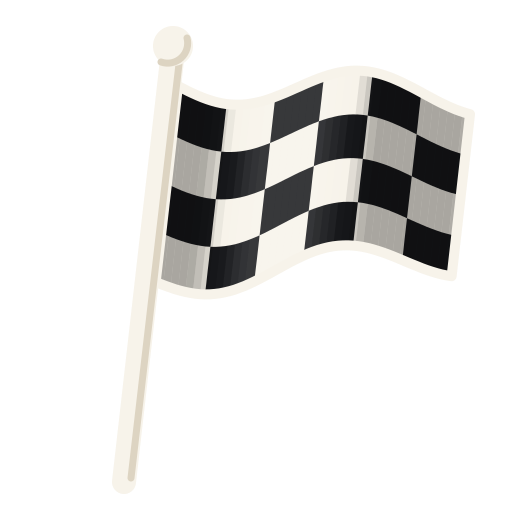

¡Bienvenido a PINTO!
¿Es tu primera carrera? Esta página es una guía breve para aprender a jugar, conocer las cartas y resolver tus dudas. Encuentra tutoriales, videos explicativos y el reglamento oficial para que estés listo antes de llegar a la meta.
Aprende a jugarAprende a jugar PINTO
Empieza aquí. Animaciones cortas te muestran, paso a paso, cómo se desarrolla una carrera.
Ver tutorialRecursos para tu carrera
Guía rápida
Las reglas principales, para resolver dudas durante la partida. El detalle completo está en el reglamento oficial.
Preparación
-
Ajusta el mazo
Según la cantidad de jugadores, retira las Banderas Azules y a Cuadros que no se usan (ver tabla) y baraja el resto.
-
Define el sentido
Acuerden si los turnos avanzan en sentido horario o antihorario. Se mantiene toda la partida.
-
Cartas ocultas
Cada jugador recibe 3 cartas boca abajo en fila (5 si juegan dos). Nadie puede mirarlas, ni siquiera su dueño.
-
Cartas visibles
Sobre cada carta oculta se coloca una carta boca arriba.
-
Reparte la mano
Reparte todas las cartas restantes. Nadie mira su mano hasta que el repartidor dé la señal.
| Jugadores | Banderas Azules | Banderas a Cuadros | Cartas en juego |
|---|---|---|---|
| 2 | 0 | 2 | 50 |
| 3–4 | 1 | 3 | 52 |
| 5–6 | 2 | 4 | 54 |
¿Quién comienza? Comienza el primer jugador que juegue un Ritmo 1 de su mano. Si nadie tiene uno, se busca el Ritmo 2, y así sucesivamente. Al inicio solo se juegan cartas de la mano.
Desarrollo de la partida
- Mantener el ritmo. Juega una carta de Ritmo de valor igual o mayor al de la carta de arriba de la pila. Las cartas especiales permiten excepciones. Ver tutorial
- Ceder el paso. Si al comenzar tu turno no tienes una jugada válida, recoges toda la pila central. Tu turno termina y el siguiente jugador tiene vía libre. Ver tutorial
- Vía libre. Con la pila vacía, o cuando una carta concede vía libre, el siguiente jugador puede empezar con cualquier carta o combinación válida. Ver tutorial
- Fases de la carrera. Primero juegas las cartas de tu mano, luego tomas tus cartas visibles y al final tus cartas ocultas, una a la vez. Si recoges la pila, debes deshacerte de esas cartas para continuar. Ver tutorial
Reglas de carrera
- Tu turno. Comienza cuando colocas tu primera carta. Puedes jugar tantas cartas como las reglas permitan, juntas o una después de otra. Después de tu primera carta, el siguiente jugador puede interrumpirte con una carta o combinación válida. Ver tutorial
- Encadenar cartas. Puedes jugar juntas varias cartas iguales: del mismo valor o del mismo tipo de carta especial. Las especiales encadenadas aplican su efecto una sola vez. La Bandera a Cuadros no se encadena. Ver tutorial
- Avanzar entre fases. Si terminas una fase en tu turno y puedes seguir jugando, continúas con la siguiente sin esperar. Ver tutorial
- Carril Lleno. Cuatro cartas iguales seguidas en la pila, de uno o varios jugadores, retiran la pila de la partida. Tu turno termina y el siguiente jugador tiene vía libre. Una Bandera Azul corta la secuencia. Ver tutorial
- Fin de turno. La Bandera Roja, la Bandera a Cuadros y el Carril Lleno terminan el turno de inmediato. Ver tutorial
Cartas especiales
-

Bandera a Cuadros
Sobre cualquier carta o con vía libre. Retira toda la pila de la partida y el siguiente tiene vía libre. Solo una por turno y tu turno termina.
Ver tutorial -

Bandera Roja
Sobre cualquier carta o con vía libre. Reinicia el ritmo sin descartar la pila. El siguiente tiene vía libre.
Ver tutorial -

Bandera Amarilla
Sobre un Ritmo Bajo (1–4), otra Amarilla o con vía libre. El siguiente debe responder con Ritmo Bajo, Amarilla, Roja o a Cuadros.
Ver tutorial -

Bandera Azul
Sobre una carta de Ritmo, otra Azul o con vía libre. El siguiente jugador en carrera pierde su turno; quien sigue responde a la carta de abajo.
Ver tutorial -

Vuelta Rápida
Sobre cualquier carta menos una Bandera Amarilla. Es el ritmo más alto: solo se responde con Vuelta Rápida, Roja o a Cuadros.
Ver tutorial -

Rebufo
Sobre Ritmos Bajos, otro Rebufo o con vía libre. Puede ir solo o con Ritmos Altos (5–8) de dos valores consecutivos.
Ver tutorial
Qué carta puedo jugar
| Arriba de la pila | Puedes jugar |
|---|---|
Vía libre |
Cualquier carta o combinación válida. |
    Ritmos Bajos Ritmos Bajos |
Un Ritmo igual o superior o cualquier carta especial. |
    Ritmos Altos Ritmos Altos |
Un Ritmo igual o superior y cualquier carta especial, salvo el Rebufo o la Bandera Amarilla. |
| Bandera Amarilla |
Ritmos Bajos, otra Bandera Amarilla, Bandera Roja o Bandera a Cuadros. |
| Bandera Azul |
Depende de la carta inferior. |
| Vuelta Rápida |
Vuelta Rápida, Bandera Roja o Bandera a Cuadros. |
| Rebufo |
Ritmos Altos, otro Rebufo, Vuelta Rápida, Bandera Roja o Bandera a Cuadros. |
Modos de juego
-

Modo Carrera Única
Una emocionante partida de aproximadamente 5 a 15 minutos. Juega tus cartas, cruza la meta y evita ser el último en llegar.
-
Modo Temporada
Compite en un campeonato de varias carreras para demostrar quién es el piloto más completo. Al finalizar cada carrera, los jugadores reciben puntos según su posición de llegada. Acumula puntos a lo largo de la temporada y conviértete en el campeón.
Puedes elegir jugar temporadas de 5, 10 o 15 carreras. ¡Gana quien acumule más puntos al finalizar el campeonato!
Hoja de puntuación: suscríbete al boletín de Kori Labs y te la enviamos gratis.
Suscribirme
¡Que comience la carrera!
PINTO · Un juego de Kori Labs
Conoce más de PINTO